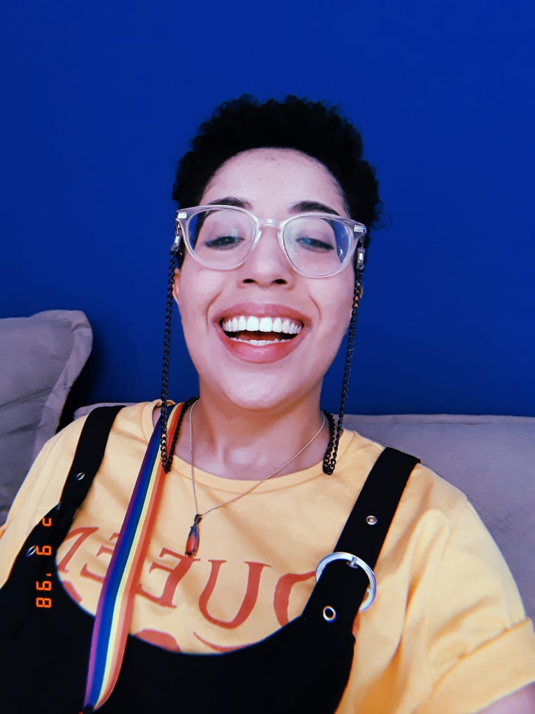

Olá, meu nome é Aline Monteiro, tenho 24 anos, moro na cidade de São Paulo.
Quero contar a história de superação da minha vida. Em uma difícil gestação de gêmeos, no qual eu e meu irmão viemos a esse mundo prematuramente mas como nem tudo sai como o planejado, ele infelizmente acabou falecendo por complicações no parto; eu por outro lado, peguei uma infecção hospitalar que me deixou internada por mais de 1 mês após meu nascimento. Contra todas as adversidades nesse início de vida, eu, com toda fragilidade de um bebe consegui sobreviver, porém, dali em diante as coisas não necessariamente melhorariam, pois cresci com a saúde levemente debilitada até meus 5 anos de idade. Gosto de pensar que desde muito nova venho persistindo na minha vida.
 E mais uma vez contrariando todas as expectativas impostas à minha existência, aprendi a ler somente aos 10 anos de idade, esse fato rendeu muita descrença sobre minhas capacidades educacionais e inclusive ouvi de uma professora que eu não seria nada na vida, um ano depois, ganhei uma pequena competição de matemática realizada na escola e desde lá não parei mais, sou uma leitora assídua e meus escritores favoritos são Machado de Assis e Saramago, gosto da forma irônica e afiada que Machado aborda a sociedade da época e gosto do humor ácido que Saramago tratava a sociedade contemporânea. Amo cinema. Cresci assistindo filmes com meus pais e quando eu terminei o ensino médio tive a oportunidade de estudar cinema por 1 ano e meio numa instituição incrível que me possibilitou aprender e me desenvolver muito bem, além de ter permitido que eu fosse ao cinema 55 vezes em 2016, eu realmente me senti uma cinéfila realizada. E a tecnologia entrou no meu caminho nessa mesma época quando eu fazia oficinas de design gráfico, edição de vídeo e uma pequena introdução a HTML e PHP.E por fim, no ano de 2021 eu resolvi dar um grande salto na minha vida educacional e profissional ao entrar na Generation Brasil, onde eu tive a oportunidade de participar de um Bootcamp Full Stack para desenvolvedora Java Jr. Além disso, pude desenvolver de forma melhor direcionada habilidades comportamentais tais como, persistência, trabalho em equipe e mentalidade de crescimento, no qual me deu o insight para continuar estudando tecnologia e me apropriar desse conhecimento.